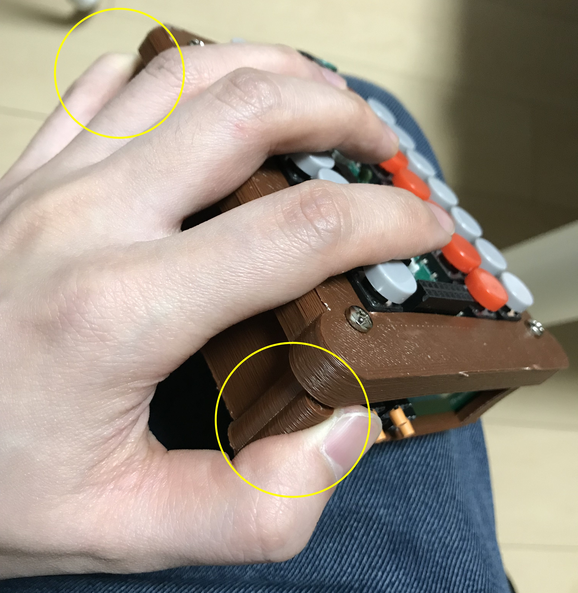
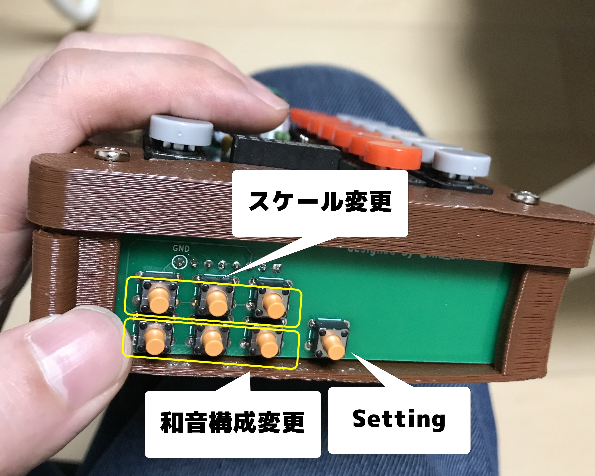
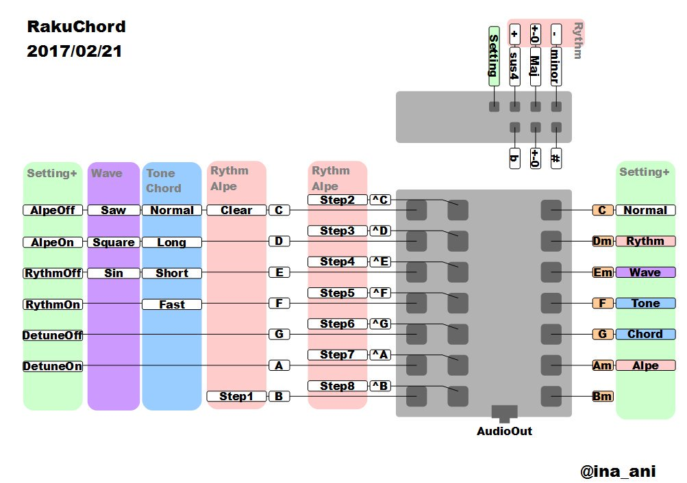

戻る
## 操作方法
### 基本的な操作方法
ドが上になるように、両手で持ちます。左手の小指と親指でRakuChordを持ち上げ右手は自由にします。

右手でメロディを演奏します。2列あるド～シ2オクターブ分を右手が担当します。右手のキーは同時に1つしか入力できません。（複数抑えると変な音が鳴ります）
左手では和音を演奏します。上からC,Dm,F,G,Am,Bmとなっている和音を担当します。左手のキーも同時に1つしか入力できません。
### サブキー
上部にある7つの小さなスイッチでモードを変えたり、和音の構成を一時的に変更することができます。

### Settingキー
一つ飛び出しているボタンがsettingキーです。このキーを押しながらほかのキーを押すことで様々なモードを切り替えることができます。
例えば「低いレ」のキーを組み合わせると和音が分散和音モードになります。「低いファ」のキーを組み合わせるとリズムモードが有効になり、ドラムの演奏が始まります。
|組み合わせキー
|:---
|低いド → 分散和音モード解除
|低いレ → 分散和音モード
|低いミ → リズムモード解除
|低いファ → リズムモード
|低いソ → デチューンモード解除
|低いラ → デチューンモード
|低いシ → なし
### 和音構成変更
Settingキーの横の3つのボタンは和音の構成変更ボタンです。
これらのキーを押しながら、和音のキーを押すことで、本来のダイアトニックコードとは構成の違う和音を鳴らすことができます。
Settingキーに近いほうから順に、sus4強制ボタン、major強制ボタン、minor強制ボタンです。
例えば sus4強制ボタン と Am を押すと Asus4が鳴ります。 minor強制ボタンと Am のようにすでにその構成になっている場合は和音の構成は変更されません。
### スケール変更
残りの3つのボタンがスケール変更です。これはカラオケのキーコンのようなもので、半音ずつこの楽器の音程を上下することができます。
真ん中のボタンは元の状態に戻すボタンです。楽器の外側のボタンは半音1つ分音程を上げます。楽器の内側のボタンは半音一つ分音程を下げます。これらのキーは何度も押すことで音程をいくつもずらすことができます。
### より詳しい機能
キーマップ説明に記載しています。
## 演奏に役立つページ
メロディは慣れれば比較的簡単に演奏することができますが、和音部分の演奏は楽譜がないと難しいです。
またRakuChordでは黒鍵がないため、半音の音階が演奏できません。そのため適切に転調して白鍵のみで演奏できるように転調する必要があります。
下記Webサービスでは様々な曲のコード譜を公開しており、加えて転調する機能も備わっています。
- https://ja.chordwiki.org/
- https://www.ufret.jp/
## 演奏のコツ
- まずは上記のページで、知っている曲を探します。できれば"ゆず" "スピッツ"など語り弾きの定番曲がおすすめです。
- Webページの転調機能を使って 、RakuChordのサポートしているC,Dm,Em,F,G,Am,Bmを使うように切り替えます。（大体の楽譜ではメロディの初めのコードをCかAmになるように調整すると良いです）
- そして、初めは和音のみを順番に押していきます。
- 次に鼻歌でメロディを探りながら、和音のみをRakuChordで演奏します。
- このとき○7,〇M7,〇m7（セブンスコード）が楽譜にある場合は、7の表記を無視して演奏すると良いです。
- 例えばAm7 の時は Am, FM7(F7も同様) の時はFといった具合です。(RakuChordはセブンスコードに対応していませんが、1音足りないだけなので何とかなります)
- またG/B といったオンコードに関しては分子のほうのコード、この場合はGを演奏すると良いです。（RakuChordは和音の転回には対応していませんが何とかなります）
- これで雰囲気をつかんだら、次はメロディだけを演奏します。上記ページにはメロディの楽譜はないので雰囲気で弾きます（大体何とかなります）
- メロディが弾けるようになったら、両方合わせて演奏します。
- 慣れてくればリズムモードをオンにしたり、分散和音を有効にして演奏すると楽しいです。
### 弾きやすい曲
転調済みリンクです
- [チェリー](https://ja.chordwiki.org/wiki/%E3%83%81%E3%82%A7%E3%83%AA%E3%83%BC)
- [God knows](https://ja.chordwiki.org/wiki.cgi?c=view&t=God+knows%E2%80%A6&key=-4&symbol=)
- [夏色](https://ja.chordwiki.org/wiki/%E5%A4%8F%E8%89%B2)
- [小さな恋の歌](https://ja.chordwiki.org/wiki.cgi?c=view&t=%E5%B0%8F%E3%81%95%E3%81%AA%E6%81%8B%E3%81%AE%E6%AD%8C&key=1&symbol=)
## チートシート
